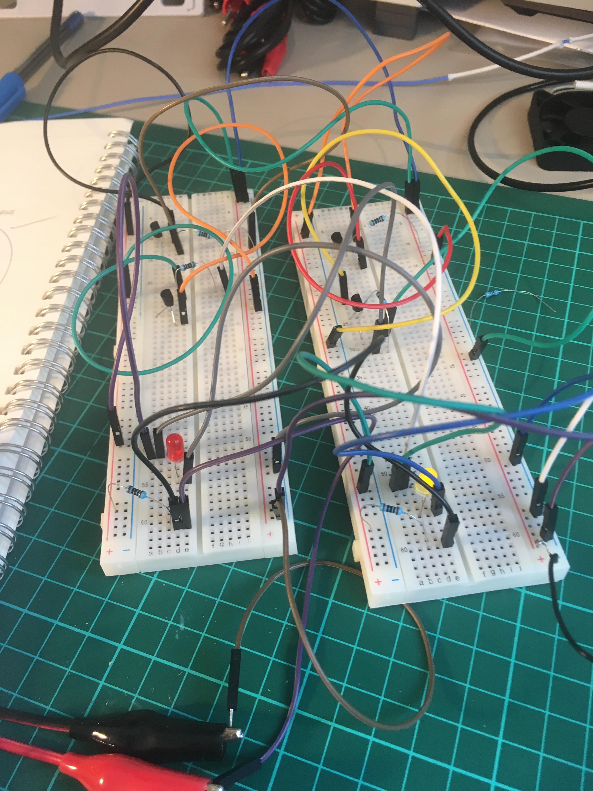

Ph.D. in Physics
University of Maine
Expected December 2027
Physics Ph.D. Candidate
University of Maine
2D Quantum Materials
Orono, Maine, USA
Let’s connectI am a Physics Ph.D. candidate at the University of Maine, working with Dr. Dinh Loc Duong. My research explores how neighboring materials can change graphene’s electronic properties, with the goal of enabling lower-power electronics. I use first-principles calculations to study spin–orbit coupling, magnetism, and proximity effects in two-dimensional materials. My background spans semiconductor alloys, energy-storage materials, and university teaching. Outside the lab, I enjoy badminton, swimming, and table tennis.
Download CVUniversity of Maine
Expected December 2027University of Engineering and Technology, Lahore
2017–2019University of Education, Lahore
2013–2017How can atomic-scale interactions help us design more energy-efficient electronic materials?
I am a Physics Ph.D. researcher at the University of Maine, working with Dr. Dinh Loc Duong on graphene and magnetic two-dimensional materials. My work explores how neighboring layers influence electronic bands, spin–orbit interactions, and magnetic proximity.
I use density functional theory (DFT) and high-performance computing to investigate electronic structure and understand how interfaces change material behavior. I am particularly interested in how this physics could inform low-power electronics.
The possibility of unidirectional topological edge transport motivates my long-term research. This is an objective under investigation, not a confirmed result.
Explore the Ph.D. project →
Selected journal articles in computational semiconductor physics and energy-storage materials.
Shafqat Nabi, Abdul Waheed Anwar, Zafar Wazir, Sardar Sikandar Hayat, Muhammad Ahmad, et al.
The European Physical Journal B · 95, 55 (2022)
Kashif Iqbal, Muhammad Ahmad Ishaq, Ali Ahmad, Muhammad Danish Ali, et al.
Inorganic Chemistry Communications · 137, 109201 (2022)
The full presentation is available
inside the doctoral project page.
See the Ph.D. project overview, interactive 3D atomic interface, and PowerPoint presentation together on one page.
Sensors, circuits, and practical problem solving.

I built a low-cost system to locate nearby objects by combining an ultrasonic sensor, servo motor, and Arduino UNO. Processing displays the object’s angle and distance.
Test result: 8 cm versus 8.6 cm, and 23 cm versus 24.2 cm measured by a ruler—about 6% mean absolute percentage error across these two checks.

What I built: gate-based circuits for adders, subtractors, and flip-flops, using breadboard wiring and LEDs.
The project page brings together my circuit photo, original full-subtractor diagrams, and an interactive full-adder demonstration.
TOOLS & TECHNICAL CAPABILITIES
Tools I use to model materials, build electronics, and turn measurements into useful results.
RESEARCH · INSTRUMENTATION · ELECTRONICS
University-based roles presented through their practical engineering and R&D skills. These are not claimed as industry employment.
University of Maine · Orono, ME
University of Maine · Orono, ME
University of Maine · Orono, ME
University of Maine · Orono, ME
University of Chenab · Gujrat, Pakistan
University of Lahore · Gujrat, Pakistan
Government College of Technology · Lahore, Pakistan
Project work and laboratory instruction are identified separately from employed research and teaching roles. See complete education and experience →
RECOMMENDATIONS & RECOGNITION
Perspectives from my research supervisor, independent researchers who cited my work, and my doctoral department.
RESEARCH SUPERVISOR · AUGUST 2025
Dr. Yu endorsed the quality, rigor, and relevance of my VASP simulations on HPC systems during my summer 2023 research assistantship. The work supported his NSF-funded project on kinetically driven solid–solid phase transitions for energy and electronic applications.
Dr. Liping Yu
Associate Professor, Materials Science and Engineering
University of Central Florida
INDEPENDENT CITING RESEARCHER · AUGUST 2025
Dr. Akhtar cited our Ga-doped AlSb study in his research on Cu-doped BaO nanoparticles. He described its findings as useful for interpreting dopant-induced structural and electronic changes. His assessment comes from independent citation, without a direct working relationship.
Dr. Majid Niaz Akhtar
Associate Professor, Institute of Physics
The Islamia University of Bahawalpur
INDEPENDENT CITING RESEARCHER · AUGUST 2025
Professor Rahman cited our hybrid supercapacitor-electrode research in his 2024 book chapter on conductive polymer nanocomposites. He highlighted it as a relevant example of hybrid electrode materials for energy storage. We have not worked together directly.
Prof. Dr. Md Mostafizur Rahman
Chemical Engineering and Polymer Science
Shahjalal University of Science and Technology
DOCTORAL STANDING CONFIRMATION · JULY 2025
Professors Hess and Thompson confirmed my doctoral enrollment, good standing, and progress as of July 31, 2025. Their letter documented my teaching and research appointments and the planned transition to research with Dr. Dinh Loc Duong in September 2025.
Prof. Samuel T. Hess & Prof. John R. Thompson
Graduate Coordinator & Department Chair
Physics and Astronomy, University of Maine
Paraphrased summaries, not verbatim quotations. Dates refer to the supplied letters.
I’m a physicist from Pakistan, now pursuing my Ph.D. at the University of Maine with Dr. Dinh Loc Duong. I’m interested in how calculations can guide better electronic materials.
My work spans semiconductor alloys, hybrid energy-storage materials, and graphene interfaces. Teaching keeps me close to the laboratory and to the challenge of explaining ideas clearly.
I enjoy badminton, swimming, billiards, foosball, and table tennis.
I’m looking for summer 2027 internships in semiconductor physics, computational materials, and research and development.
Download my CVOpen to summer 2027 internships